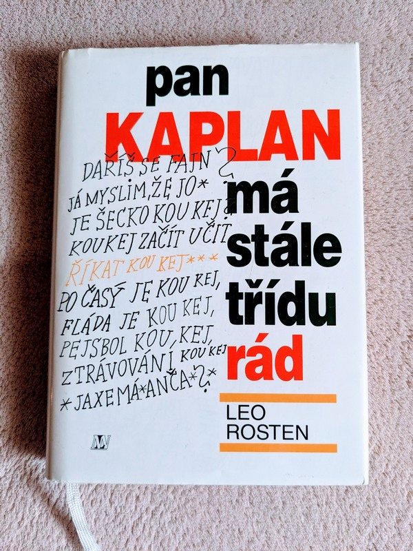
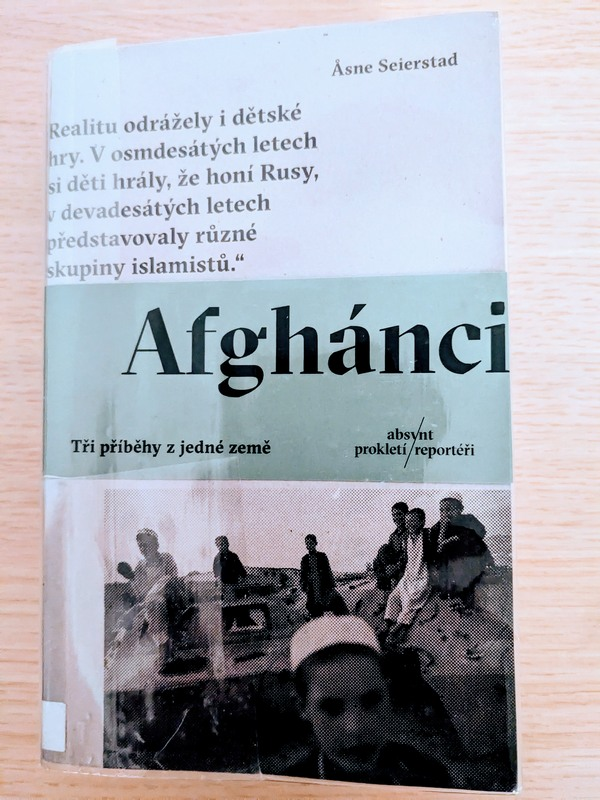
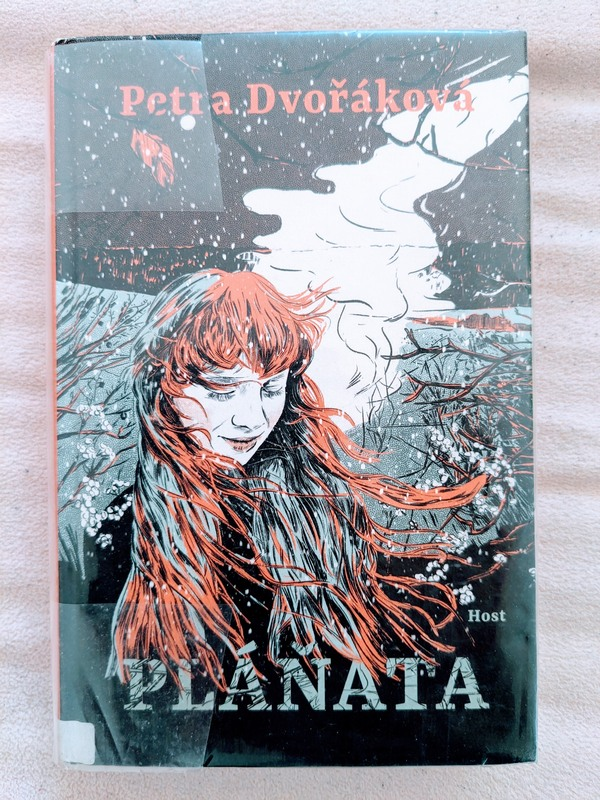
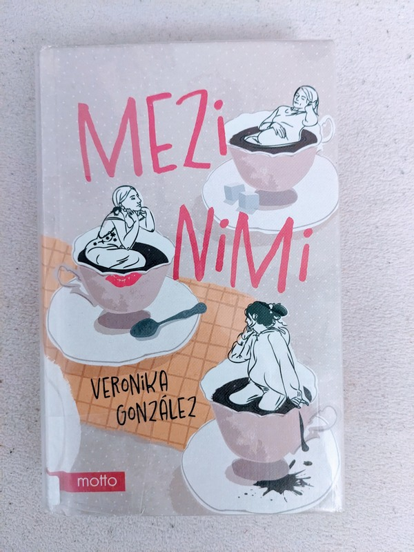
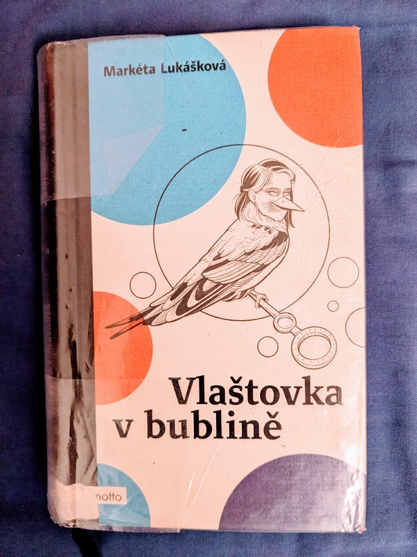

Jak se tak dívám a rekapituluju, neměla jsem tento podzim úplně šťastnou ruku na vybrané tituly. To ovšem člověk dopředu nikdy neví :-) Třeba tu i tak načerpáte trochu inspirace nebo si minimálně odnesete info, s jakými knihami není třeba ztrácet čas :-)
Leo Rosten - Pan Kaplan má stále třídu rád
Tuhle knížku jsem kdysi dávno dostala od bráchy k Vánocům a musím říct, že mě vlastně nikdy úplně neoslovila, přestože má tak dobré recenze a všeobecně je pochvalně hodnocena. Jedná se o humoristický román, odehrávající se v předválečném New Yorku, jehož hlavním hrdinou je evropský přistěhovalec pan Kaplan, který navštěvuje večerní školu, aby se zdokonalil v anglickém jazyce. Hrátky s jazykem jsou také ústředním tématem celé knihy a na nečekaných slovních konstrukcích je celý humor vystavěn. Klobouk dolů před českým překladatelem! Jinak je ovšem na románu patrný zub času – před lety by možná pan Kaplan mohl být považován za komickou postavu, očima dnešního čtenáře je to však spíš trapný prudič, který nebohého pana profesora Parkhilla každou hodinu něčím tvrdohlavě trollí a není schopný přiznat svoje chyby. Pokud hledáte knihu s dějem a situační humor vám nestačí, doporučuji raději zalovit v jiných vodách :-)

Åsne Seierstad - Afghánci
Reportáže norské novinářky Åsne Seierstad jsou vždy sázkou na jistotu a ani v tomto případě tomu nebylo jinak. Jak již název napovídá, v knize Afghánci se vrací opět do Afghánistánu, země zmítané za poslední desetiletí nejprve nadvládou sovětského svazu, posléze občanskou válkou, nadvládou islamistů, po 11. září válkou s USA a nakonec po odchodu amerických vojsk rychlým nástupem tálibánské diktatury. Jaké životní osudy žili v Afghánistánu na pozadí těchto událostí „běžní“ lidé ukazuje Åsne na příbězích Džamíly, Bašíra a Ariany. Každý z příběhů je úplně jiný, dohromady však skládají zajímavou mozaiku, která možná ledacos napoví o aktuálním směřování této země. Zatímco Džamíla je aktivistkou za ženská práva, Bašír se stane už jako mladý chlapec talibánským bojovníkem. Ariana zase netouží po ničem jiném, než dosažení vysněného vzdělání a kariéře právničky – nástup Talibánu k moci v roce 2021 jí však v jejích plánech udělá velkou čáru přes rozpočet… Afghánci je opět jedna z těch knih, která vás naprosto pohltí a vtáhne do děje a s jejímiž postavami budete ještě nějakou dobu žít. A to je vždycky záruka kvality :-)

Petra Dvořáková - Pláňata
Musím říct, že Pláňata mi přišla jako jedna z nejslabších knih, které jsem od Petry Dvořákové četla, a to mě většinou její tvorba nezklame. Příběh jedné obyčejné české rodiny vyprávěný střídavě z pohledu otce, matky a dospívající dcery nepřináší nic zajímavého tématem ani zpracováním. Postavy mi přišly takové nemastné neslané a prvky toxicity, které se v rodině vyskytovaly (alkoholismus, náznak zneužívání, citově chladná matka), recyklované z autorčiných předchozích románů. Jen tak mimoděk se na pozadí odehraje Sametová revoluce, bohužel však ani vykreslení vyrůstání v devadesátých letech nepřinese očekávané plusové body příjemné nostalgie.

Veronika González - Mezi nimi
Mám tu jeden literární objev z českých luhů a hájů - to pokud byste těch toxických rodinných vztahů náhodou neměli ještě dost. V tomto případě je ústředním motivem knihy komplikovaný vztah tří sester, který se čtenáři odhaluje postupně, jak při čtení rozplétá nečekanou rodinnou historii. Přiznám se, že ta “pointa” mi přišla dost přitažená za vlasy, ale i tak jsem se velmi dobře bavila. Autorka má totiž chytlavý styl psaní i dar vtáhnout do děje - je to jedna z těch knih, nad kterou budete přemýšlet v mezičasech, kdy zrovna nebudete mít možnost číst dál. Veronika González na poli české literatury tímto románem debutovala a já už se rozhodně moc těším na její další tvorbu!

Markéta Lukášková - Vlaštovka v bublině
A nakonec opět jedno lehké zklamání, ačkoliv už nějakou dobu tuším, že Markéta Lukášková není na poli literárním můj šálek čaje (stále jí však dávám šanci a nechci to vzdát :). Vlaštovka v bublině za mě začala velmi ambiciózně, až jsem si po prvních pár stranách říkala, že tohle bude wow… No a pak bohužel přišlo vystřízlivění, seznámení s hrdinčinými dětmi, jejichž životní peripetie mi byly tak nějak jedno a necítila jsem sympatie ani k jednomu z nich… a hlavně je ten příběh líznutý science fiction a vy co mě znáte, víte, že jestli se s nějakým žánrem totálně míjím, je to právě sci-fi. Jediná dějová linka, která mě z celého příběhu zaujala a donutila knihu dočíst, byl návrat hlavní hrdinky Báry do minulosti, protože jsem prostě byla zvědavá, co způsobilo rozpad jejího manželství. Nakonec mi však celé to rozuzlení přišlo strašně zjednodušené, odbyté a nepravděpodobné. Nadále zůstávám věrnou posluchačkou Markétiných podcastů, ale od jejích knih si teď dávám zas na nějakou chvíli pauzu.
